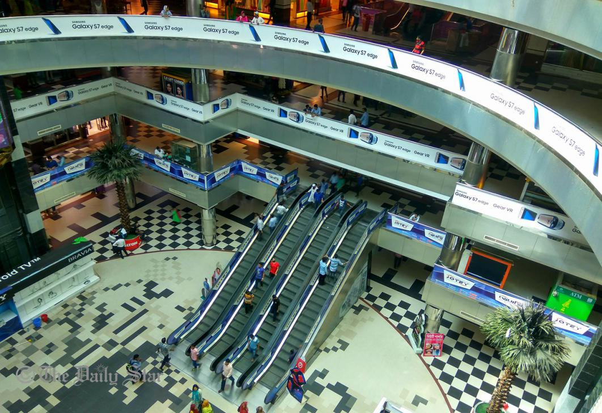

Shopping malls, markets to remain open from May 10
May 04, 2020 | 3 Comments
The government has decided to allow all markets, shops and shopping malls across the country to remain open till 4:00pm from May 10.
CONTINUE READINGALL COMPUTERS WAIT AT THE SAME SPPED
May 04, 2020 | 3 Comments
The government has decided to allow all markets, shops and shopping malls across the country to remain open till 4:00pm from May 10.
CONTINUE READINGJapan has extended a grant of approximately Tk 24 million to three Bangladeshi NGOs -- Thengamara Mohila Sabuj Sangha (TMSS), Prism Bangladesh Foundation (PRISM) and Trust for the Rehabilitation of the Paralysed (TRP).
CONTINUE READINGMay 04, 2020| 1 Comment
Prime Minister Sheikh Hasina today said all educational institutions will remain closed till September if situation caused by the coronavirus outbreak does not improve.
CONTINUE READINGApril 27, 2020| 7 Comments
Bangladesh have fallen behind Afghanistan in the ICC Men's Test Team rankings and into 10th place following the annual update carried out on Friday, which also eliminates results from 2016-17. ICC media release however states that the annual ranking table does not figure Afghanistan and Ireland as those two nations have not played enough Tests but ICC Test match rankings in their official website still displays Afghanistan in eighth spot because of more ranking points than Bangladesh.
CONTINUE READINGMay 04, 2020 | 3 Comments